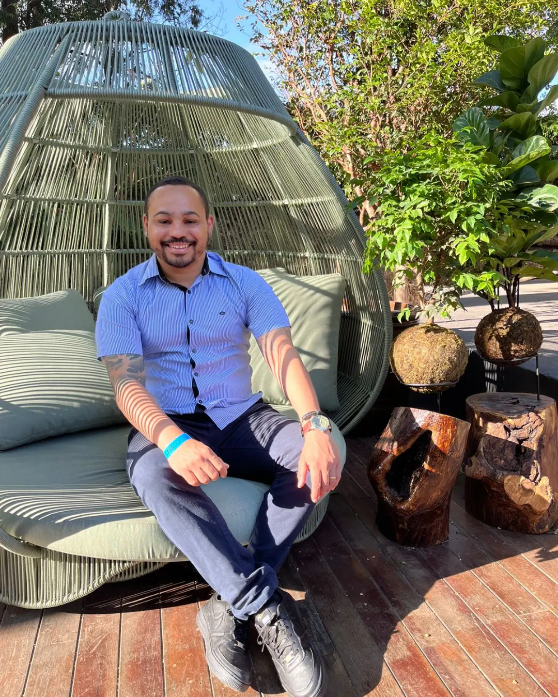

Arquiteto
Mario Martins
Arquitetura que transforma rotina em experiência.
Itabira e região, MG

Sobre
Mario Martins. Arquiteto em Itabira e região, Minas Gerais.
Quatro frentes de trabalho: residencial, comercial, interiores e execução. Do conceito ao canteiro.
Atuação
- Residencial
- Comercial
- Interiores
- Execução
Portfólio
Projetos em Destaque
Trabalho autoral desenvolvido para transformar conceitos em arquitetura contemporânea.
Tem um terreno, reforma ou espaço para transformar?
Conversar sobre meu projetoVamos conversar sobre o seu projeto?
Converse no WhatsApp